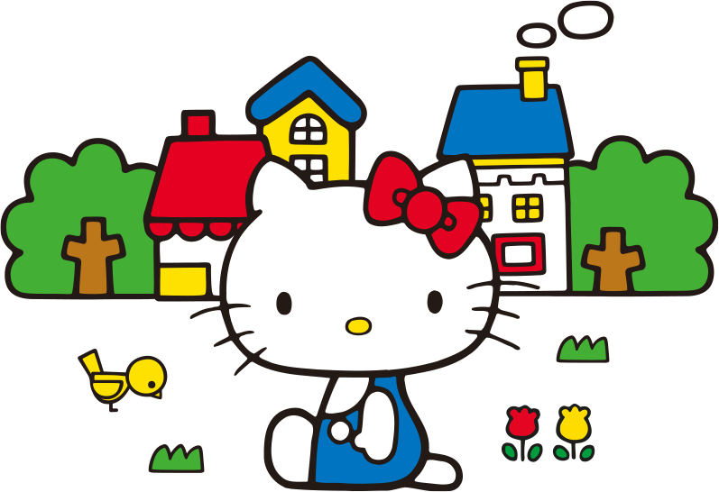

2021100873 김지연
사과 5개를 쌓은 높이의 키와, 사과 3개 정도의 몸무게가 나가는 헬로키티는 밝고 상냥한 여자아이예요.
쿠키를 만들고 피아노 치는 것을 가장 좋아하며, 피아니스트와 시인이 되는 것이 꿈이에요.
특기는 음악과 영어. 좋아하는 음식은 엄마가 만들어준 애플 파이. 쌍둥이 동생 미미와 가장 친하답니다.

폼폼푸린은 짙은 갈색의 베레모가 트레이드마크인 골든리트리버랍니다.
좋아하는 말은 '외출'이고 싫어하는 말은 '혼자 집 지키기'이지요.
취미는 신발 모으기로 주인인 아빠의 가죽 신발, 엄마의 샌들을 한 짝씩 몰래 숨겨 둔답니다.
우유와 푹신푹신한 팬케이크, 엄마가 만들어주는 푸딩을 가장 좋아해요.
특기는 낮잠과 푸딩 체조예요. 누구와도 잘 친해지며, 주인 누나의 집 현관에 있는 푸린용 바구니에 살고 있어요.
푸린의 꿈은 점점 더 커지는 것이라고 하네요.
자칭 마이멜로디의 라이벌인 쿠로미.
난폭하게 보일 때도 있지만 사실은 아주 여성스러운 타입이지요!?
검은색 두건과 핑크색 해골이 포인트랍니다.
취미는 일기 쓰기. 잘생긴 남자 애를 좋아하고 최근에는 연애 소설에 빠져있어요.
좋아하는 색은 검은색이고 좋아하는 음식은 락교예요.